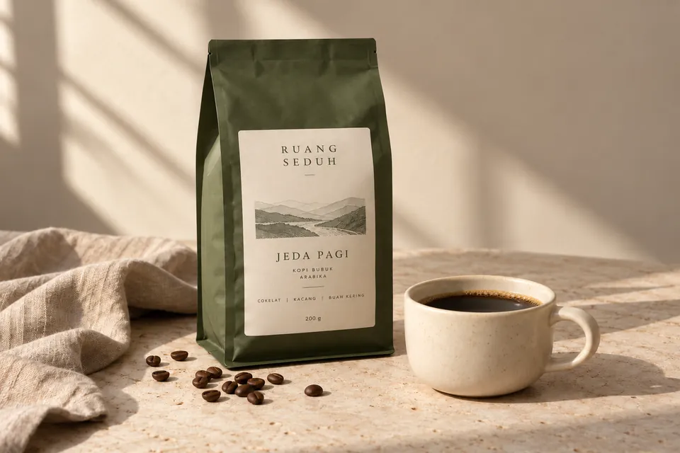
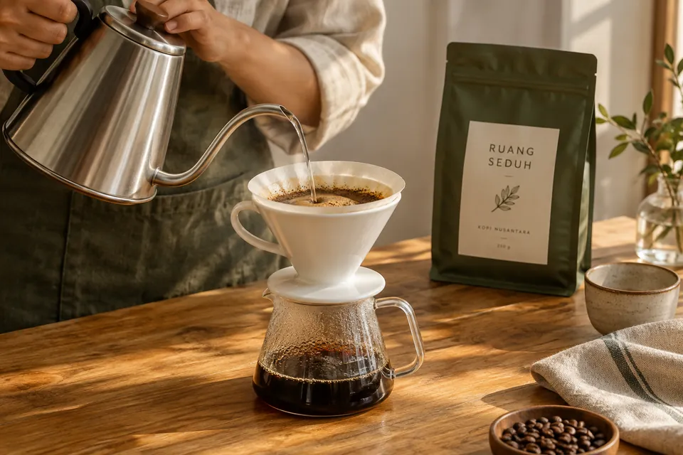

ADA WAKTU UNTUK MENYEDUH.
Kopi untuk
jeda sehari-hari.

Biji kopi, drip bag, dan alat seduh untuk menemani waktu kecil yang kamu punya.
Belanja Kopi Kenali Ruang SeduhPilih cara menikmati kopi
MULAI DARI SINI
Pilihan untuk jedamu.

TENTANG RUANG SEDUH
Jeda kecil,
ritual yang berarti.
Kami membayangkan kopi sebagai bagian sederhana dari hari: menggiling biji, memanaskan air, lalu duduk sebentar sebelum kembali melangkah.
Ruang Seduh adalah konsep toko untuk ritual itu. Ada biji kopi untuk yang senang bereksperimen, drip bag untuk pagi yang singkat, dan alat seduh untuk sudut favorit di rumah.
Brand, produk, dan profil rasa di website ini adalah contoh fiktif untuk portofolio Masyubi.
Temukan teman seduhmu